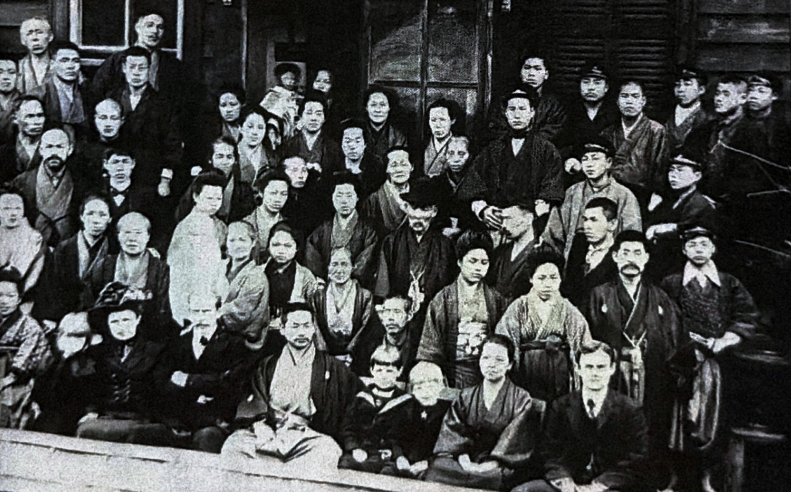

明治初期
旧組合教会の流れを受け継ぐ教会
日本基督教団鳥取教会は、鳥取県鳥取市西町にある教会で、旧組合教会の流れを受け継ぐ教会です。その歩みは、明治初期のキリスト教伝道にさかのぼります。
明治初期の伝道に始まった鳥取教会の歩みを、信仰、教育、地域との関わりの中でたどります。 受け継がれてきた祈りと交わりは、今日の教会の土台となっています。

鳥取教会の歴史は、明治初期にこの地で始まったキリスト教伝道にさかのぼります。 旧組合教会の流れを受け継ぎながら、地域に根ざして福音を伝えてきました。
伝道者たちの働き、教育への志、信仰復興の出来事を通して形づくられてきた歩みをたどります。
日本基督教団鳥取教会は、鳥取県鳥取市西町にある教会で、旧組合教会の流れを受け継ぐ教会です。その歩みは、明治初期のキリスト教伝道にさかのぼります。
明治12年（1879年）、熊本バンドの一人であり、同志社英学校で学んでいた加藤勇次郎が、鳥取出身の吉村秀蔵の招きによって鳥取を訪れました。加藤はこの地で、40日間にわたる鳥取最初の本格的な伝道活動を行いました。
その後、吉村秀蔵を中心に、金森通倫、綱島佳一、元良勇次、上代知新、J・H・デフォレスト、O・ケリー、E・タルカット、ジョージ・ローランドなど、多くの伝道者やアメリカン・ボードの宣教師たちが鳥取での宣教を支えました。そして明治13年（1880年）、鳥取教会の基礎が形づくられていきました。
明治15年（1882年）には、元魚町一丁目の綱島佳吉、岡垣春六、堀利蔵らによって、求道者の集まりである「友愛会」が結成されました。翌明治16年（1883年）には、若桜町の借家で説教所が開かれ、さらに明治19年（1886年）には、鹿野街道沿いの家で集会が行われるようになりました。その後、日本基督伝道会社から上代知新が招聘され、初代牧師として着任しました。
E・タルカット宣教師は鳥取に長期滞在し、地域の教育にも大きな働きを残しました。明治20年（1887年）には、鳥取教会を支えとして鳥取英和女学校が設立されます。財政的な困難により15年で閉校しましたが、鳥取におけるキリスト教教育の大切な足跡となりました。
明治21年（1888年）には、アメリカン・ボードの宣教師ジョージ・ローランドが鳥取に赴任しました。その翌年、明治22年（1889年）3月24日、ローランド宣教師のもとで、友愛会、青年会、英和女学校の生徒たちを中心に信仰復興の出来事が起こりました。このリバイバルによって多くの人々が信仰へと導かれ、教会堂は人々で満たされるようになりました。
明治23年（1890年）、これまでの伝道と集会の歩みを土台として、鳥取教会は教会として創立・独立しました。明治初期から続いてきた福音宣教の実りが、この地に根ざす教会共同体として形づくられていきました。
こうした歩みの中から、内田正、尾崎信太郎、西尾幸太郎、森脇竹蔵をはじめ、地域と教会に仕える多くの人材が生まれました。大正5年（1916年）には、アメリカン・ボードの婦人宣教師エステラ・コーが鳥取に赴任しました。コー宣教師の働きによって教会の活動はさらに広がり、熊本バンドにならって「鳥取バンド」と呼ばれる信仰の群れも形成されていきました。
鳥取教会は、明治以来、地域に根ざしながら福音を伝え、教育、祈り、交わりを大切にして歩んできました。その歴史を受け継ぎ、今日もこの地にあって、神の愛と平和を証しする教会として歩み続けています。